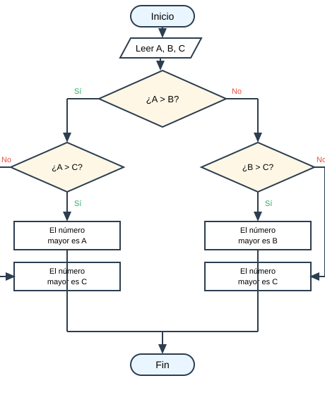
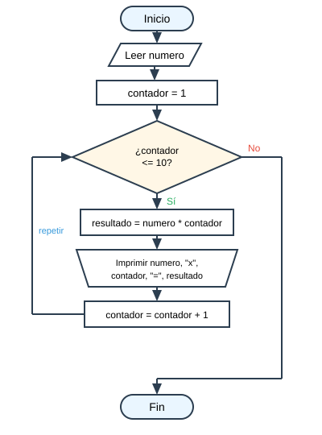

🧮 Algoritmos Anidados
Decisiones complejas con varias condiciones, y procesos repetitivos con bucles
¿Qué es un algoritmo anidado?
Un algoritmo anidado contiene decisiones dentro de otras decisiones. Es decir, dentro del camino "Sí" o "No" de una condición aparece una nueva condición. Esto permite resolver problemas con varios caminos posibles, como decidir cuál de tres números es el mayor.
Mayor de tres números
Leer tres números diferentes y determinar el mayor.
Inicio Leer A, B, C Si A > B entonces: Si A > C entonces: Imprimir "El número mayor es A" Si no Imprimir "El número mayor es C" Si no Si B > C entonces: Imprimir "El número mayor es B" Si no: Imprimir "El número mayor es C" Fin si Fin

Diagrama anidado: una decisión (¿A>C? o ¿B>C?) dentro de otra (¿A>B?).
🔄 Bucles y ciclos
Un bucle es un proceso que se repite mientras se cumpla una condición. Se usa con un contador que va aumentando en cada repetición. La estructura "Mientras condición hacer ... Fin mientras" regresa el flujo al inicio del bucle hasta que la condición deja de cumplirse.
Tabla de multiplicar
Generar la tabla del 1 al 10 para un número ingresado.
Inicio Leer numero contador = 1 Mientras contador <= 10 hacer: resultado = numero * contador Imprimir numero, "x", contador, "=", resultado contador = contador + 1 Fin mientras Fin

Diagrama de bucle: el flujo regresa a la condición hasta que contador supera 10.